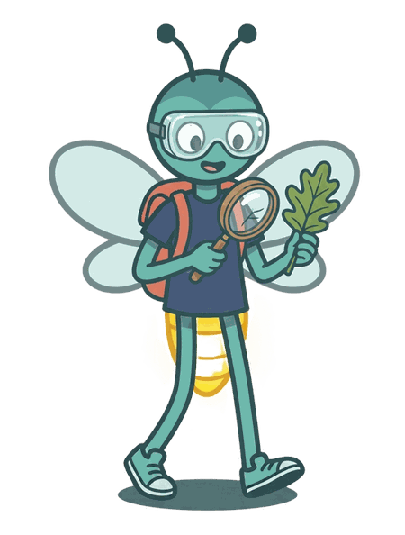
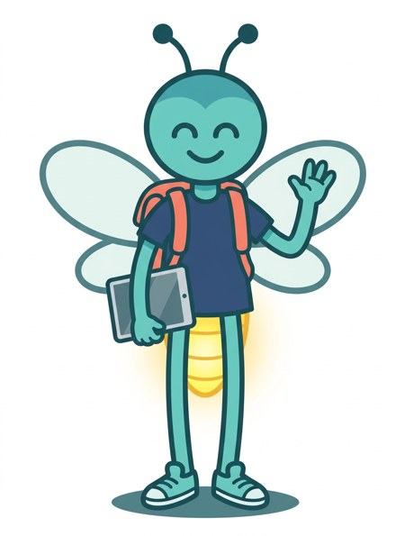

A class has a big question with two sides. Sort the evidence cards: which side does each one help, and which ones are not evidence at all? Then choose a side and build your argument.
Una clase tiene una pregunta con dos lados. Ordena las tarjetas de evidencia: ¿a qué lado ayuda cada una, y cuáles ni siquiera son evidencia? Luego elige un lado y arma tu argumento.
Who is playing?¿Quién juega?
What grade are you in?¿En qué grado estás?

Now decide: which side do you choose?Ahora decide: ¿qué lado eliges?